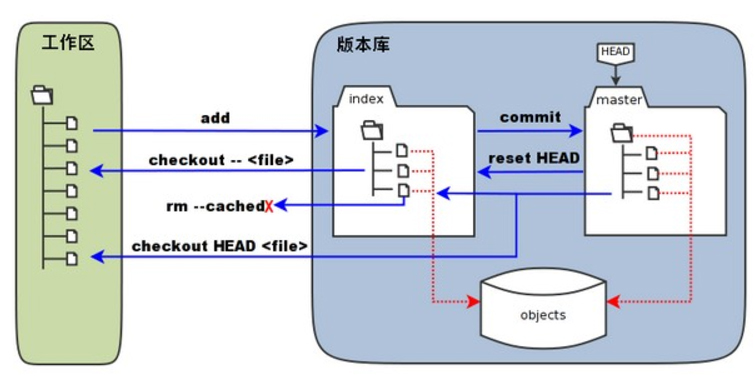

<!DOCTYPE html><html><head><meta charset="utf-8"><title>教学讲义 | 技术学派</title><meta name="viewport" content="width=device-width,initial-scale=1,maximum-scale=1"><meta name="keywords" content="IT培训, Python, 大数据, 人工智能, Web前端, PHP, "><meta name="description" content="第一章 git基础知识第一节 git 简介git 是什么？Git是目前世界上最先进的分布式版本控制系统（没有之一）。特点： 高端大气上档次git 版本管理工具的作用大型项目需要多人协作git与linux是同一个作者免费的网络git服务器 coding.net github.com普通公司代码非开源，都有自己的git服务器git 的下载菜鸟教程 : http://www.runoob.com/git"><meta property="og:type" content="website"><meta property="og:title" content="教学讲义"><meta property="og:url" content="http://www.JiShuXuePai.com/tech/git/notes.html"><meta property="og:site_name" content="技术学派"><meta property="og:description" content="第一章 git基础知识第一节 git 简介git 是什么？Git是目前世界上最先进的分布式版本控制系统（没有之一）。特点： 高端大气上档次git 版本管理工具的作用大型项目需要多人协作git与linux是同一个作者免费的网络git服务器 coding.net github.com普通公司代码非开源，都有自己的git服务器git 的下载菜鸟教程 : http://www.runoob.com/git"><meta property="og:locale" content="zh-CN"><meta property="og:image" content="http://www.jishuxuepai.com/tech/git/images/pic_01.jpg"><meta property="og:updated_time" content="2018-05-11T08:14:16.654Z"><meta name="twitter:card" content="summary"><meta name="twitter:title" content="教学讲义"><meta name="twitter:description" content="第一章 git基础知识第一节 git 简介git 是什么？Git是目前世界上最先进的分布式版本控制系统（没有之一）。特点： 高端大气上档次git 版本管理工具的作用大型项目需要多人协作git与linux是同一个作者免费的网络git服务器 coding.net github.com普通公司代码非开源，都有自己的git服务器git 的下载菜鸟教程 : http://www.runoob.com/git"><meta name="twitter:image" content="http://www.jishuxuepai.com/tech/git/images/pic_01.jpg"><link rel="stylesheet" href="/libs/bootstrap/bootstrap-grid.css"><link rel="stylesheet" href="/libs/font-awesome/css/font-awesome.min.css"><link rel="stylesheet" href="/libs/titillium-web/styles.css"><link rel="stylesheet" href="/libs/source-code-pro/styles.css"><link rel="stylesheet" href="/css/style.css"><script src="/libs/jquery/jquery.min.js"></script><link rel="stylesheet" href="/libs/lightgallery/css/lightgallery.min.css"><link rel="stylesheet" href="/libs/justified-gallery/justifiedGallery.min.css"><script>var _hmt=_hmt||[];!function(){var e=document.createElement("script");e.src="//hm.baidu.com/hm.js?4c1bd812de3c30edbaa2b803c66f0a04";var t=document.getElementsByTagName("script")[0];t.parentNode.insertBefore(e,t)}()</script></head></html><body><div id="wrap"><header id="header"><div id="header-outer" class="outer"><div class="container"><div class="container-inner"><div id="header-title"><h1 class="logo-wrap"><a href="/" class="logo"></a></h1></div><div id="header-inner" class="nav-container"><a id="main-nav-toggle" class="nav-icon fa fa-bars">菜单</a><div class="nav-container-inner"><ul id="main-nav"><li class="main-nav-list-item"><a class="main-nav-list-link" href="/">主页</a></li><li class="main-nav-list-item"><a class="main-nav-list-link" href="/edu/index.html">学编程</a></li><li class="main-nav-list-item"><a class="main-nav-list-link" href="/blog/">博客</a></li><li class="main-nav-list-item"><a class="main-nav-list-link" href="/nav.html">网站导航</a></li><li class="main-nav-list-item"><a class="main-nav-list-link" href="/tips.html">学习建议</a></li><li class="main-nav-list-item"><a class="main-nav-list-link" href="/about.html">关于</a></li></ul><nav id="sub-nav"><div id="search-form-wrap"><form class="search-form"><input type="text" class="ins-search-input search-form-input" placeholder="搜索"> <button type="submit" class="search-form-submit"></button></form><div class="ins-search"><div class="ins-search-mask"></div><div class="ins-search-container"><div class="ins-input-wrapper"><input type="text" class="ins-search-input" placeholder="想要查找什么..."> <span class="ins-close ins-selectable"><i class="fa fa-times-circle"></i></span></div><div class="ins-section-wrapper"><div class="ins-section-container"></div></div></div></div><script>window.INSIGHT_CONFIG={TRANSLATION:{POSTS:"文章",PAGES:"页面",CATEGORIES:"分类",TAGS:"标签",UNTITLED:"(未命名)"},ROOT_URL:"/",CONTENT_URL:"/content.json"}</script><script src="/js/insight.js"></script></div></nav></div></div></div></div></div></header><div class="container"><div class="main-body container-inner"><div class="main-body-inner"><section id="main"><div class="main-body-header"><h1 class="header"><em class="page-title-link" data-url="/tech/git/notes.html">教学讲义</em><div class="author">杨永胜</div></h1></div><div class="main-body-content"><article id="page-" class="article article-single article-type-page" itemscope itemprop="blogPost"><div class="article-inner"><header class="article-header"><h1 class="article-title" itemprop="name">教学讲义</h1></header><div class="article-entry" itemprop="articleBody"><h1 id="第一章-git基础知识"><a href="#第一章-git基础知识" class="headerlink" title="第一章  git基础知识"></a>第一章 git基础知识</h1><h2 id="第一节-git-简介"><a href="#第一节-git-简介" class="headerlink" title="第一节 git 简介"></a>第一节 git 简介</h2><ul><li>git 是什么？</li></ul><blockquote><p>Git是目前世界上最先进的分布式版本控制系统（没有之一）。</p><p>特点： 高端大气上档次</p></blockquote><ul><li>git 版本管理工具的作用</li></ul><blockquote><p>大型项目需要多人协作</p><p>git与linux是同一个作者</p><p>免费的网络git服务器 coding.net github.com</p><p>普通公司代码非开源，都有自己的git服务器</p></blockquote><ul><li>git 的下载</li></ul><blockquote><p>菜鸟教程 : <a href="http://www.runoob.com/git/git-workspace-index-repo.html" target="_blank" rel="noopener">http://www.runoob.com/git/git-workspace-index-repo.html</a></p><p>简易教程：<a href="http://www.bootcss.com/p/git-guide/" target="_blank" rel="noopener">http://www.bootcss.com/p/git-guide/</a></p><p>阮一峰教程: <a href="http://www.ruanyifeng.com/blog/2014/06/git_remote.html" target="_blank" rel="noopener">http://www.ruanyifeng.com/blog/2014/06/git_remote.html</a></p><p><a href="https://git-scm.com/" target="_blank" rel="noopener">https://git-scm.com/</a> // 官网下载</p></blockquote><ul><li>git的安装</li></ul><blockquote><p>windows 下安装步骤</p><p>1 use git from the windows command prompt // 选择默认项</p><p>2 checkout windows-style,commit unix-style line endings // 使用默认项</p><p>确认git安装成功 ： 命令提示符下输入git , 提示信息为:</p><p>安装成功： 可选参数帮助信息;</p></blockquote><ul><li>git的配置</li></ul><blockquote><p>因为Git是分布式版本控制系统，所以，每个机器都必须自报家门：你的名字和Email地址</p><p>否则版本库不知道是哪位程序员进行的版本更新</p></blockquote><blockquote><figure class="highlight plain"><table><tr><td class="gutter"><pre><span class="line">1</span><br><span class="line">2</span><br><span class="line">3</span><br><span class="line">4</span><br></pre></td><td class="code"><pre><span class="line">&gt; $ git config --global user.name &quot;Your Name&quot;           // 配置用户名</span><br><span class="line">&gt; $ git config --global user.email &quot;email@example.com&quot;  // 配置邮箱</span><br><span class="line">&gt; git config --global  --list  // 查看当前git的配置信息</span><br><span class="line">&gt;</span><br></pre></td></tr></table></figure></blockquote><ul><li>创建版本库</li></ul><blockquote><p>什么是版本库呢？版本库又名仓库，英文名<strong>repository</strong>，你可以简单理解成一个目录，这个目录里面的所有文件都可以被Git管理起来，每个文件的修改、删除，Git都能跟踪，以便任何时刻都可以追踪历史，或者在将来某个时刻可以“还原”。</p><p>d:/git-test&gt; git init ; // 创建仓库;</p></blockquote><ul><li>工作区、暂存区、版本库的概念</li></ul><ul><li><strong>工作区：</strong>就是你在电脑里能看到的目录。<ul><li><strong>暂存区：</strong>英文叫stage, 或index。一般存放在 “.git目录下” 下的index文件（.git/index）中，所以我们把暂存区有时也叫作索引（index）。</li><li><strong>版本库：</strong>工作区有一个隐藏目录.git，这个不算工作区，而是Git的版本库</li></ul></li></ul><p>​ </p><h2 id="第二节-git基本操作"><a href="#第二节-git基本操作" class="headerlink" title="第二节 git基本操作"></a>第二节 git基本操作</h2><p>​</p><ul><li><p>添加文件到版本库</p><blockquote><ul><li><p>git add * 将工作区内容添加到暂存区</p><p>git add 文件1 文件2 或 git add . 将指定文件或工作区所有文件添加到暂存区</p></li><li><p>git commit -m “版本说明信息” 将暂存区内容提交到版本库</p></li><li><p>git commit -am “commite content” 对已追踪的文件 add+commit合写;</p></li></ul></blockquote><p>​</p></li></ul><ul><li>查看仓库修改信息</li></ul><figure class="highlight plain"><table><tr><td class="gutter"><pre><span class="line">1</span><br><span class="line">2</span><br><span class="line">3</span><br><span class="line">4</span><br></pre></td><td class="code"><pre><span class="line">git status                    // 新增了哪些文件，哪些文件被修改过;</span><br><span class="line">git diff                      // 工作区域缓存区的差别</span><br><span class="line">git diff master               // 工作区与版本库的差别</span><br><span class="line">git diff --cached             // 暂存区域版本库的差别</span><br></pre></td></tr></table></figure><ul><li>撤销文件修改</li></ul><figure class="highlight plain"><table><tr><td class="gutter"><pre><span class="line">1</span><br><span class="line">2</span><br><span class="line">3</span><br></pre></td><td class="code"><pre><span class="line">git reset -- filename      // 将文件从版本库恢复到暂存区;</span><br><span class="line">git checkout -- filename   // 将文件从暂存区恢复到工作区;</span><br><span class="line">git checkout HEAD -- filename  // 将文件从版本库恢复到暂存区与工作区</span><br></pre></td></tr></table></figure><ul><li>从仓库删除文件</li></ul><figure class="highlight plain"><table><tr><td class="gutter"><pre><span class="line">1</span><br><span class="line">2</span><br></pre></td><td class="code"><pre><span class="line">git rm -- filename          // 将文件从工作区，缓存区中删除,版本库保留</span><br><span class="line">git rm --cached filename;   // 将文件从版本库删除，暂存区与工作区保留</span><br></pre></td></tr></table></figure><ul><li>查看版本日志</li></ul><figure class="highlight plain"><table><tr><td class="gutter"><pre><span class="line">1</span><br><span class="line">2</span><br></pre></td><td class="code"><pre><span class="line">git log     // 查看commit 的历史记录,退出多屏模式(:q)</span><br><span class="line">git reflog  // 简化版的git log ,可以查看commit_id;</span><br></pre></td></tr></table></figure><ul><li>版本切换</li></ul><figure class="highlight plain"><table><tr><td class="gutter"><pre><span class="line">1</span><br><span class="line">2</span><br><span class="line">3</span><br><span class="line">4</span><br></pre></td><td class="code"><pre><span class="line">切换版本</span><br><span class="line"></span><br><span class="line">git reset --hard commit_id  // 切换到 指定的commit_id </span><br><span class="line">git reset --hard HEAD~1     // 返回上个版本(~2 返回上上版本)</span><br></pre></td></tr></table></figure><h1 id="第二章-git企业应用"><a href="#第二章-git企业应用" class="headerlink" title="第二章 git企业应用"></a>第二章 git企业应用</h1><h2 id="第一节-github仓库"><a href="#第一节-github仓库" class="headerlink" title="第一节  github仓库"></a>第一节 github仓库</h2><blockquote><p>git 服务器实现多人协作：</p><p>找一台电脑充当服务器的角色，每天24小时开机，其他每个人都从这个“服务器”仓库克隆一份到自己的电脑上，并且各自把自己提交推送到服务器仓库里，也从服务器仓库中拉取别人的提交。</p><p>好在这个世界上有个叫<a href="https://github.com/" target="_blank" rel="noopener">GitHub</a>的神奇的网站，从名字就可以看出，这个网站就是提供Git仓库托管服务的，所以，只要注册一个GitHub账号，就可以免费获得Git远程仓库。</p></blockquote><ul><li>注册github账号</li><li>远程仓库配置(加密问题)</li></ul><figure class="highlight plain"><table><tr><td class="gutter"><pre><span class="line">1</span><br><span class="line">2</span><br><span class="line">3</span><br><span class="line">4</span><br><span class="line">5</span><br><span class="line">6</span><br><span class="line">7</span><br><span class="line">8</span><br><span class="line">9</span><br><span class="line">10</span><br><span class="line">11</span><br><span class="line">12</span><br><span class="line">13</span><br><span class="line">14</span><br><span class="line">15</span><br><span class="line">16</span><br><span class="line">17</span><br><span class="line">18</span><br><span class="line">19</span><br><span class="line">20</span><br></pre></td><td class="code"><pre><span class="line"></span><br><span class="line">// 由于你的本地Git仓库和GitHub仓库之间的传输是通过SSH加密的</span><br><span class="line"></span><br><span class="line">[第1步] 创建 SSH key  (开始/所有程序/git/Git Bash) </span><br><span class="line"></span><br><span class="line">$ ssh-keygen -t rsa -C &quot;youremail@example.com&quot;   </span><br><span class="line">// 邮件换成自己邮件，然后一路回车</span><br><span class="line">// 中间需要输入5位短字符,记住后面要用;</span><br><span class="line">  </span><br><span class="line">[第2步]  拷贝文件</span><br><span class="line"></span><br><span class="line">生成文件位置:  C:\Users\gamyys\.ssh </span><br><span class="line"></span><br><span class="line">主目录里找到.ssh目录，里面有id_rsa和id_rsa.pub两个文件</span><br><span class="line"></span><br><span class="line">[第3步] 粘贴内容</span><br><span class="line"></span><br><span class="line">登陆GitHub，打开“Account settings”，“SSH Keys”页面</span><br><span class="line"></span><br><span class="line">然后，点“Add SSH Key”，填上任意Title，在Key文本框里粘贴id_rsa.pub文件的内容</span><br></pre></td></tr></table></figure><ul><li>添加远程仓库</li></ul><blockquote><p>你已经在本地创建了一个Git仓库后，又想在GitHub创建一个Git仓库，并且让这两个仓库进行远程同步，这样，GitHub上的仓库既可以作为备份，又可以让其他人通过该仓库来协作，真是一举多得。</p></blockquote><ul><li>关联远程仓库</li></ul><figure class="highlight plain"><table><tr><td class="gutter"><pre><span class="line">1</span><br><span class="line">2</span><br><span class="line">3</span><br></pre></td><td class="code"><pre><span class="line">git remote add origin git@github.com:gamyys9/demo.git   // origin 根源，起源，指远程仓库;</span><br><span class="line">git remote -v          // 查看详细远程仓库信息</span><br><span class="line">git remote rm origin2  // 删除远程仓库origin2</span><br></pre></td></tr></table></figure><ul><li>将本地仓库master推送到github服务器</li></ul><figure class="highlight plain"><table><tr><td class="gutter"><pre><span class="line">1</span><br><span class="line">2</span><br></pre></td><td class="code"><pre><span class="line">$ git push -u origin master  </span><br><span class="line">// 当前仓库与多个远程仓库关联,当第一次push使用-u 可以设定默认远程仓库,这样可以使用git push 向默认远程仓库推送;</span><br></pre></td></tr></table></figure><ul><li>从远程仓库克隆</li></ul><figure class="highlight plain"><table><tr><td class="gutter"><pre><span class="line">1</span><br></pre></td><td class="code"><pre><span class="line">$ git clone git@github.com:gamyys9/demo.git  //从远程仓库克隆(注意需要输入短密)</span><br></pre></td></tr></table></figure><h2 id="第二节-git企业实战"><a href="#第二节-git企业实战" class="headerlink" title="第二节 git企业实战"></a>第二节 git企业实战</h2><blockquote><p>如果你是新人，刚加入项目组，需要先将大家完成的项目部分拷贝至你本地，使用的就是远程仓库克隆。</p><p>你从远程仓库克隆时，实际上Git自动把本地的<code>master</code>分支和远程的<code>master</code>分支对应起来了，并且，远程仓库的默认名称是<code>origin</code>。</p></blockquote><ul><li>克隆远程仓库</li></ul><figure class="highlight plain"><table><tr><td class="gutter"><pre><span class="line">1</span><br></pre></td><td class="code"><pre><span class="line">git clone git@github.com:gamyys2/test.git  // 克隆仓库</span><br></pre></td></tr></table></figure><ul><li>查看远程仓库</li></ul><figure class="highlight plain"><table><tr><td class="gutter"><pre><span class="line">1</span><br><span class="line">2</span><br><span class="line">3</span><br></pre></td><td class="code"><pre><span class="line">git remote  // origin</span><br><span class="line"></span><br><span class="line">git remote -v // 查看远程仓库详细信息</span><br></pre></td></tr></table></figure><ul><li>工作区修改</li></ul><figure class="highlight plain"><table><tr><td class="gutter"><pre><span class="line">1</span><br><span class="line">2</span><br><span class="line">3</span><br></pre></td><td class="code"><pre><span class="line">// 完成属于你的工作任务，并提交;</span><br><span class="line">git add *</span><br><span class="line">git commit -m &quot;my-work&quot;</span><br></pre></td></tr></table></figure><ul><li>推送分支</li></ul><figure class="highlight plain"><table><tr><td class="gutter"><pre><span class="line">1</span><br><span class="line">2</span><br><span class="line">3</span><br><span class="line">4</span><br><span class="line">5</span><br></pre></td><td class="code"><pre><span class="line">// 第一次推送 </span><br><span class="line">git push -u origin master  // 将本地master分支推送到远程; </span><br><span class="line"></span><br><span class="line">// 第二次推送</span><br><span class="line">git push</span><br></pre></td></tr></table></figure><ul><li>更新本地仓库</li></ul><figure class="highlight plain"><table><tr><td class="gutter"><pre><span class="line">1</span><br></pre></td><td class="code"><pre><span class="line">git pull  // 从远程仓库更新内容到本地;</span><br></pre></td></tr></table></figure><h1 id="第三章-git分支管理"><a href="#第三章-git分支管理" class="headerlink" title="第三章 git分支管理"></a>第三章 git分支管理</h1><h2 id="第一节-分支基础"><a href="#第一节-分支基础" class="headerlink" title="第一节 分支基础"></a>第一节 分支基础</h2><ul><li><p>分支作用</p><blockquote><p>你想开发一个新功能，开发到50%立刻提交，由于功能不完整，会影响其他同事的开发，如果不提交，又担心丢掉已完成的代码，这样的话，可以创建一个新的分支，随时可以提交，不影响主分支，开发完成后，再合并到主分支;</p></blockquote></li></ul><ul><li><p>分支的管理</p><ul><li>创建分支</li><li>切换分支</li><li>删除分支<figure class="highlight plain"><table><tr><td class="gutter"><pre><span class="line">1</span><br><span class="line">2</span><br><span class="line">3</span><br><span class="line">4</span><br><span class="line">5</span><br><span class="line">6</span><br><span class="line">7</span><br><span class="line">8</span><br><span class="line">9</span><br><span class="line">10</span><br><span class="line">11</span><br><span class="line">12</span><br><span class="line">13</span><br><span class="line">14</span><br><span class="line">15</span><br><span class="line">16</span><br><span class="line">17</span><br><span class="line">18</span><br><span class="line">19</span><br><span class="line">20</span><br><span class="line">21</span><br><span class="line">22</span><br><span class="line">23</span><br><span class="line">24</span><br><span class="line">25</span><br><span class="line">26</span><br><span class="line">27</span><br></pre></td><td class="code"><pre><span class="line"></span><br><span class="line">// 1 创建并切换分支 </span><br><span class="line"></span><br><span class="line"> git branch dev;   // 创建分支</span><br><span class="line"></span><br><span class="line"> git checkout dev // 切换到dev分支 </span><br><span class="line"> </span><br><span class="line"> // 创建+切换  git branch -b dev</span><br><span class="line"></span><br><span class="line"> // 2 查看当前分支 </span><br><span class="line"></span><br><span class="line"> git branch;  </span><br><span class="line"></span><br><span class="line"> // 3 切换回主分支 </span><br><span class="line"></span><br><span class="line"> git checkout master; </span><br><span class="line"></span><br><span class="line"> // 4 将dev分支合并到主分支 </span><br><span class="line"></span><br><span class="line"> git merge dev; // 注意当前分支为主分支;</span><br><span class="line"></span><br><span class="line"> // 5 删除dev分支 </span><br><span class="line"></span><br><span class="line"> git branch -d dev;</span><br><span class="line"> </span><br><span class="line"> // 分支切换配图</span><br><span class="line"> https://www.liaoxuefeng.com/wiki/0013739516305929606dd18361248578c67b8067c8c017b000/001375840038939c291467cc7c747b1810aab2fb8863508000</span><br></pre></td></tr></table></figure></li></ul></li></ul><h2 id="第二节-分支冲突"><a href="#第二节-分支冲突" class="headerlink" title="第二节 分支冲突"></a>第二节 分支冲突</h2><ul><li>分支的冲突</li></ul><figure class="highlight plain"><table><tr><td class="gutter"><pre><span class="line">1</span><br><span class="line">2</span><br><span class="line">3</span><br><span class="line">4</span><br><span class="line">5</span><br><span class="line">6</span><br><span class="line">7</span><br><span class="line">8</span><br><span class="line">9</span><br><span class="line">10</span><br><span class="line">11</span><br><span class="line">12</span><br><span class="line">13</span><br><span class="line">14</span><br><span class="line">15</span><br><span class="line">16</span><br><span class="line">17</span><br><span class="line">18</span><br><span class="line">19</span><br><span class="line">20</span><br><span class="line">21</span><br><span class="line">22</span><br><span class="line">23</span><br><span class="line">24</span><br><span class="line">25</span><br><span class="line">26</span><br><span class="line">27</span><br><span class="line">28</span><br><span class="line">29</span><br><span class="line">30</span><br></pre></td><td class="code"><pre><span class="line"></span><br><span class="line">// 创建分支 tom </span><br><span class="line">git checkout -b tom;</span><br><span class="line"></span><br><span class="line">// 修改工作区内容</span><br><span class="line"></span><br><span class="line">git add .</span><br><span class="line">git commit -m &quot;tom&quot;;</span><br><span class="line"></span><br><span class="line">// 切换到主分支master</span><br><span class="line">git checkout master</span><br><span class="line"></span><br><span class="line">git checkout -b peter;</span><br><span class="line"> </span><br><span class="line">// 修改工作区内容;</span><br><span class="line">git add *</span><br><span class="line">git commit -m peter</span><br><span class="line"></span><br><span class="line">git merge tom</span><br><span class="line"></span><br><span class="line">// 产生冲突</span><br><span class="line"></span><br><span class="line">// 解决冲突</span><br><span class="line"></span><br><span class="line">// 提交</span><br><span class="line">git commit -m conflict fixed</span><br><span class="line"></span><br><span class="line">// 查看提交历史</span><br><span class="line"></span><br><span class="line">git log --graph (显示分支历史图)</span><br></pre></td></tr></table></figure><h2 id="第三节-远程仓库"><a href="#第三节-远程仓库" class="headerlink" title="第三节 远程仓库"></a>第三节 远程仓库</h2><figure class="highlight plain"><table><tr><td class="gutter"><pre><span class="line">1</span><br><span class="line">2</span><br><span class="line">3</span><br><span class="line">4</span><br><span class="line">5</span><br><span class="line">6</span><br><span class="line">7</span><br><span class="line">8</span><br><span class="line">9</span><br><span class="line">10</span><br><span class="line">11</span><br><span class="line">12</span><br><span class="line">13</span><br><span class="line">14</span><br><span class="line">15</span><br><span class="line">16</span><br><span class="line">17</span><br></pre></td><td class="code"><pre><span class="line"></span><br><span class="line">// 1 设置默认主机+分支;</span><br><span class="line"></span><br><span class="line">git checkout master ; // 确保master为当前分支;</span><br><span class="line"></span><br><span class="line">git push -u origin master  // 将本地主分支推送到远程主分支并合并;</span><br><span class="line"></span><br><span class="line">git pull  从远程仓库主分支更新内容到本地主分支</span><br><span class="line"></span><br><span class="line"></span><br><span class="line">// 2 如果想推送本地的dev分支到远程;</span><br><span class="line"></span><br><span class="line">git  checkout dev // 设置dev为当前分支;</span><br><span class="line"></span><br><span class="line">git push -u origin dev  // 将本地dev分支推送到远程;</span><br><span class="line"></span><br><span class="line">git pull  从远程的dev分支更新内容到当前dev分支;</span><br></pre></td></tr></table></figure><h1 id="第四章-git标签管理"><a href="#第四章-git标签管理" class="headerlink" title="第四章 git标签管理"></a>第四章 git标签管理</h1><ul><li>每个commit版本通过一串数字标识，不好记忆，可以给这串数字起个别名，方便版本管理，这个别名就是标签</li></ul><ul><li>打标签的方法</li></ul><figure class="highlight plain"><table><tr><td class="gutter"><pre><span class="line">1</span><br><span class="line">2</span><br><span class="line">3</span><br></pre></td><td class="code"><pre><span class="line">git tag  // 查看标签列表</span><br><span class="line"></span><br><span class="line">git tag v1.0  commit_id  // 对指定的commit版本打标签</span><br></pre></td></tr></table></figure><ul><li>标签的管理</li></ul><figure class="highlight plain"><table><tr><td class="gutter"><pre><span class="line">1</span><br><span class="line">2</span><br><span class="line">3</span><br><span class="line">4</span><br><span class="line">5</span><br><span class="line">6</span><br><span class="line">7</span><br><span class="line">8</span><br><span class="line">9</span><br><span class="line">10</span><br><span class="line">11</span><br><span class="line">12</span><br><span class="line">13</span><br><span class="line">14</span><br><span class="line">15</span><br><span class="line">16</span><br><span class="line">17</span><br><span class="line">18</span><br></pre></td><td class="code"><pre><span class="line">// 标签是保存在本地的，可以删除</span><br><span class="line"></span><br><span class="line">$ git tag -d v1.0  // 删除标签</span><br><span class="line"></span><br><span class="line">// 将本地的某个标签推送到远程</span><br><span class="line"></span><br><span class="line"> $ git push origin v1.0 </span><br><span class="line"> </span><br><span class="line"> // 将本地标签全部推送到远程</span><br><span class="line"> </span><br><span class="line"> $ git push origin --tags</span><br><span class="line"> </span><br><span class="line"> // 删除远程标签 </span><br><span class="line"></span><br><span class="line"> $ git tag -d v1.9 // 先从本地删除</span><br><span class="line"> $ git push origin :refs/tags/v1.9  // 从远处删除</span><br><span class="line"></span><br><span class="line">// 可以登录github查看是否删除</span><br></pre></td></tr></table></figure><h1 id="第五章-git其他问题"><a href="#第五章-git其他问题" class="headerlink" title="第五章 git其他问题"></a>第五章 git其他问题</h1><ul><li>忽略文件</li></ul><blockquote><p>并不是所有文件都需要提交进行版本管理，需要忽略的文件可以记录到 .gitignore;</p><p>在 .gitignore 文件中列出需要忽略的文件，则这些文件不会被git忽略不纳入版本管理</p><p>但 .gitignore文件本身需要被提交到git</p></blockquote></div><footer class="article-footer"><a data-url="http://www.JiShuXuePai.com/tech/git/notes.html" data-id="cjh70hmtk002vegfymtvh3j1o" class="article-share-link"><i class="fa fa-share"></i>分享到</a><script>!function(n){n("body").on("click",function(){n(".article-share-box.on").removeClass("on")}).on("click",".article-share-link",function(t){t.stopPropagation();var e,a=n(this),o=a.attr("data-url"),r=encodeURIComponent(o),i="article-share-box-"+a.attr("data-id"),s=a.offset();if(n("#"+i).length){if((e=n("#"+i)).hasClass("on"))return void e.removeClass("on")}else{var l=['<div id="'+i+'" class="article-share-box">','<input class="article-share-input" value="'+o+'">','<div class="article-share-links">','<a href="https://twitter.com/intent/tweet?url='+r+'" class="article-share-twitter" target="_blank" title="Twitter"></a>','<a href="https://www.facebook.com/sharer.php?u='+r+'" class="article-share-facebook" target="_blank" title="Facebook"></a>','<a href="http://pinterest.com/pin/create/button/?url='+r+'" class="article-share-pinterest" target="_blank" title="Pinterest"></a>','<a href="https://plus.google.com/share?url='+r+'" class="article-share-google" target="_blank" title="Google+"></a>',"</div>","</div>"].join("");e=n(l),n("body").append(e)}n(".article-share-box.on").hide(),e.css({top:s.top+25,left:s.left}).addClass("on")}).on("click",".article-share-box",function(t){t.stopPropagation()}).on("click",".article-share-box-input",function(){n(this).select()}).on("click",".article-share-box-link",function(t){t.preventDefault(),t.stopPropagation(),window.open(this.href,"article-share-box-window-"+Date.now(),"width=500,height=450")})}(jQuery)</script></footer></div></article><section id="comments"><div id="gitalk_frame"></div></section></div></section><aside id="sidebar"><a class="sidebar-toggle" title="Expand Sidebar"><i class="toggle icon"></i></a><div class="sidebar-top"><p>关注我 :</p><ul class="social-links"><li><a class="social-tooltip" title="火星时代" href="http://edu.hxsd.com/edunew/topics/webfull/index.html" target="_blank"><i class="icon fa fa-dribbble"></i></a></li><li><a class="social-tooltip" title="weibo" href="#" target="_blank"><i class="icon fa fa-weibo"></i></a></li><li><a class="social-tooltip" title="rss" href="/atom.xml" target="_blank"><i class="icon fa fa-rss"></i></a></li></ul></div><div class="widgets-container"><link rel="stylesheet" href="/css/tech/technology.css"><div class="widget-wrap widget-list"><div class="widget"><dl class="technology"><dt></dt><dd><p>Git团队协同开发</p><div class="notes"><a href="/tech/git/notes.html">教学讲义</a></div><div class="row"><div class="col-4 change_blue"><a href="/tech/git/case.html">0<br>案例</a></div><div class="col-4 plan"><a href="##">10<br>核心知识</a></div><div class="col-4 plan"><a href="##">10<br>文章</a></div></div><div class="row"><div class="col-6 plan"><a href="##">教学计划</a></div><div class="col-6"><a href="/tech/git/relative.html">相关资料</a></div></div></dd></dl></div></div><link rel="stylesheet" href="/css/tech/toc.css"><div class="widget-wrap widget-list widget-toc"><h3 class="widget-title">目录</h3><div class="widget"><div class="toc"></div><link rel="stylesheet" href="https://cdnjs.cloudflare.com/ajax/libs/tocbot/3.0.5/tocbot.css"><script src="https://cdnjs.cloudflare.com/ajax/libs/tocbot/3.0.5/tocbot.min.js"></script><script>$(function(){$(".main-body-content").find("h1,h2,h3").each(function(t){$(this).attr("id")||$(this).attr("id","list"+t)}),tocbot.init({tocSelector:".toc",contentSelector:".main-body-content",headingSelector:"h1, h2, h3",collapseDepth:2,positionFixedSelector:".widget-toc",fixedSidebarOffset:595,includeHtml:!1})})</script></div></div><div class="widget-wrap widget-list"><h3 class="widget-title">链接</h3><div class="widget"><ul><li><a href="http://edu.hxsd.com/edunew/topics/webfull/index.html">火星时代</a></li></ul></div></div></div></aside><script>$(function(){$(window).scroll(function(){240<=$(document).scrollTop()?($("#sidebar .sidebar-toggle").addClass("fix"),"block"==$("#sidebar .sidebar-toggle").css("display")&&$(".is-position-fixed").css("top","35px")):$("#sidebar .sidebar-toggle").removeClass("fix")})})</script></div></div></div><footer id="footer"><div class="top"><div class="inner"><div class="list"><div class="left clearfix"><dl><dt>关于我们</dt><dd><a href="/about.html">公司简介</a></dd><dd><a href="edu/index.html">联系我们</a></dd></dl><dl><dt>校区攻略</dt><dd><a href="edu/index.html">校区环境</a></dd><dd><a href="edu/index.html">住宿攻略</a></dd><dd><a href="edu/index.html">来校路线</a></dd></dl><dl><dt>课程培训</dt><dd><a href="edu/python.html">Web前端</a></dd><dd><a href="edu/python.html">Python</a></dd><dd><a href="edu/python.html">人工智能</a></dd><dd><a href="edu/python.html">大数据</a></dd></dl><dl><dt>常见问答</dt><dd><a href="edu/index.html">学费学时</a></dd><dd><a href="edu/index.html">学习方法</a></dd></dl></div></div><div class="tel"><tel>176-0025-8815</tel><span>北京市海淀区杏石口路81号火星时代大厦</span></div><div class="weixin"><div class="w1"> <span>头条号</span></div><div class="w1"> <span>官方微信</span></div></div></div></div><div class="bot">Copyright 2018 技术学派 京ICP备15015508号-3</div></footer><link rel="stylesheet" href="https://unpkg.com/gitalk/dist/gitalk.css"><script src="https://unpkg.com/gitalk/dist/gitalk.min.js"></script><script>var gitalk=new Gitalk({clientID:"2fbbb9980b49019d99a7",clientSecret:"152dd10e83ef6595761ea2185304f9ac8263573f",repo:"jsxp",owner:"li-kang",admin:["li-kang"]});gitalk.render("gitalk_frame")</script><script src="/libs/lightgallery/js/lightgallery.min.js"></script><script src="/libs/lightgallery/js/lg-thumbnail.min.js"></script><script src="/libs/lightgallery/js/lg-pager.min.js"></script><script src="/libs/lightgallery/js/lg-autoplay.min.js"></script><script src="/libs/lightgallery/js/lg-fullscreen.min.js"></script><script src="/libs/lightgallery/js/lg-zoom.min.js"></script><script src="/libs/lightgallery/js/lg-hash.min.js"></script><script src="/libs/lightgallery/js/lg-share.min.js"></script><script src="/libs/lightgallery/js/lg-video.min.js"></script><script src="/libs/justified-gallery/jquery.justifiedGallery.min.js"></script><script src="/js/main.js"></script></div></body>